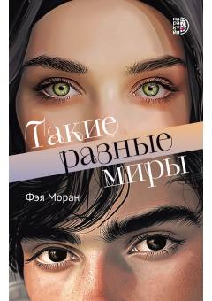

ТРAmerikada yashovchi musulmon qizning maktabdagi qiyinchiliklari va kutilmagan munosabatlari haqidagi ta'sirli roman.
Asar 1980-yillardagi Amerikada yashovchi, o'z dini va e'tiqodi tufayli kamsitishlarga uchraydigan musulmon qiz Lamiya Uayt haqida hikoya qiladi. Maktabdagi yangi hayot va mashhur o'quvchi Elias bilan kutilmagan munosabatlar uning butun dunyosini o'zgartirib yuboradi. Kitob o'smirlar o'rtasidagi munosabatlar, tushunmovchiliklar va o'zligini saqlab qolish kurashini ochib beradi.